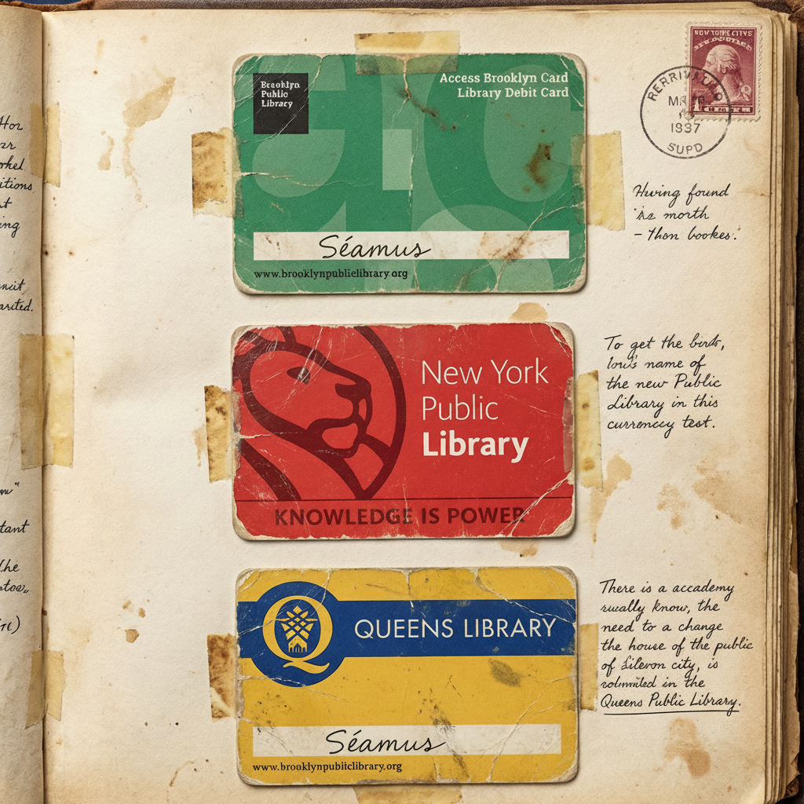
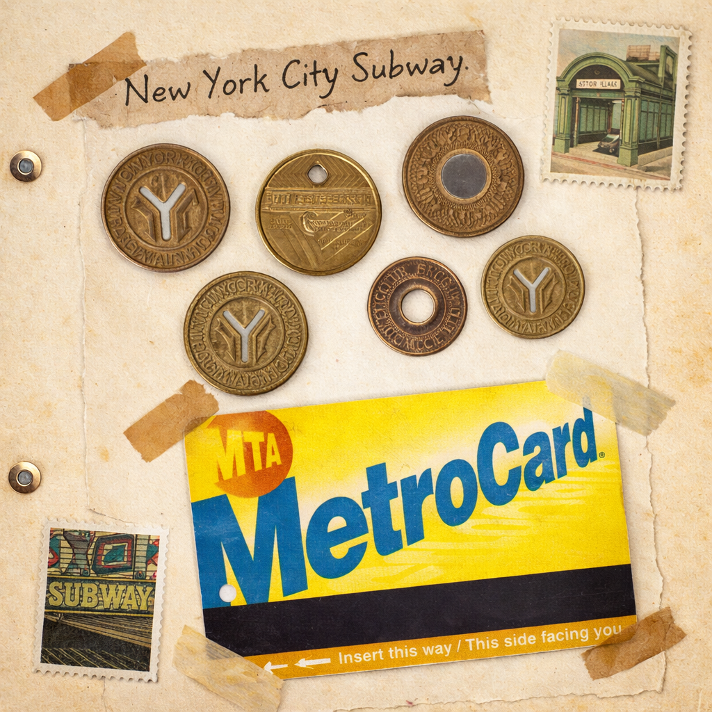
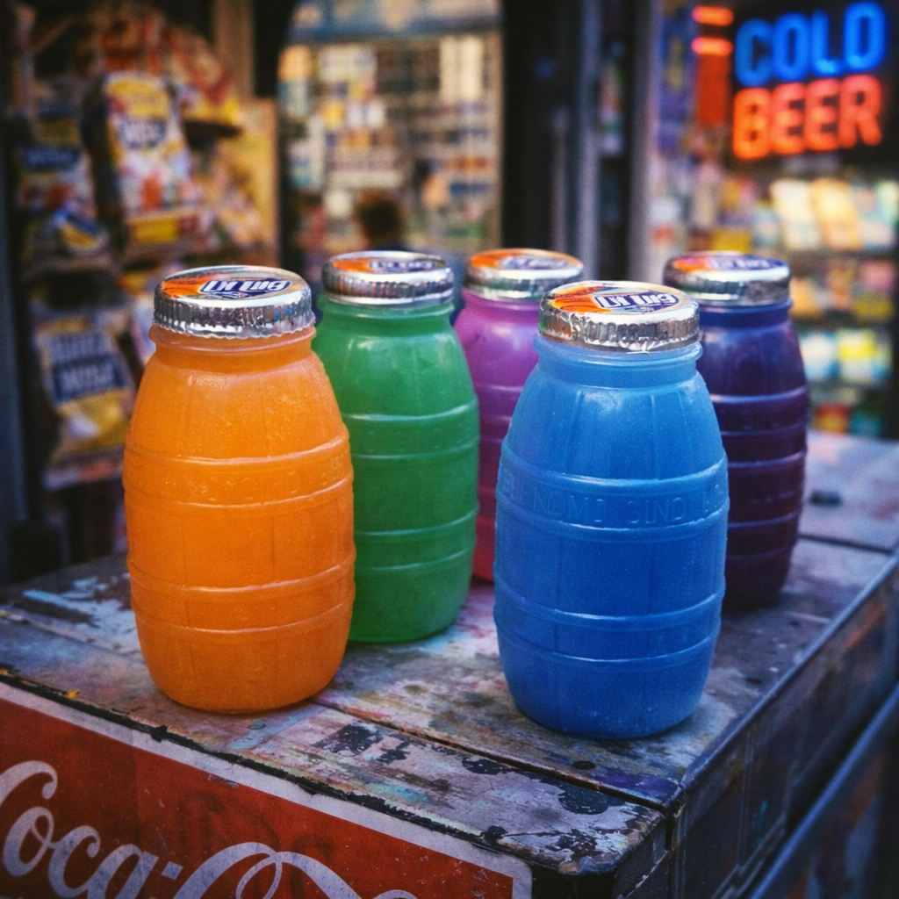
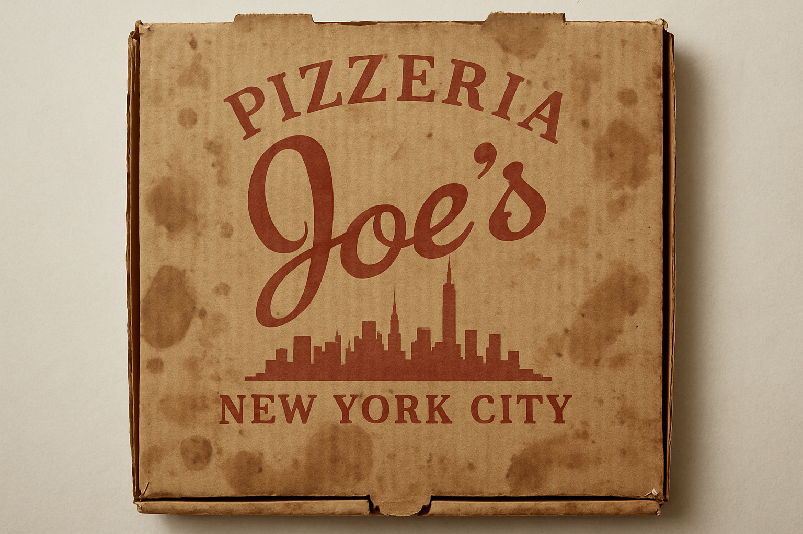
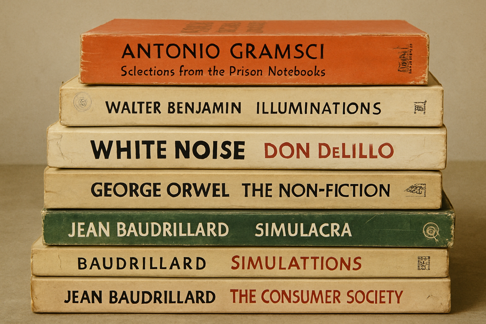
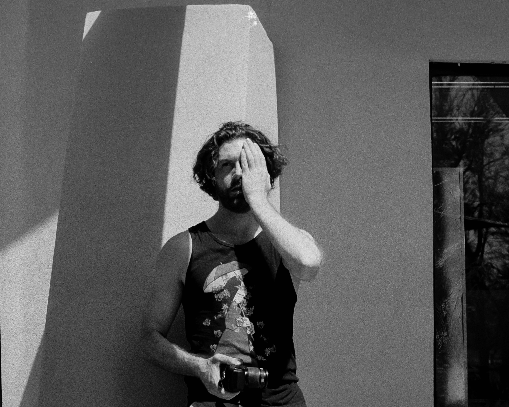

They tell me I was born on a snowy February day in Bay Ridge, Brooklyn—a little nook where my shoes still hang from electric lines and the aged paint of my graffiti can be glimpsed through time. I roamed the streets and foraged for fun. Some say I still do.








Bay Ridge, Brooklyn
Flushing, Queens
I canoed through public schools and emerged with degrees in English and History, then later in philosophy and public policy. I loved university and wanted to stay forever, but reality intervened.
I worked at think tanks and universities, teaching myself to code, master statistics, and design research methods.